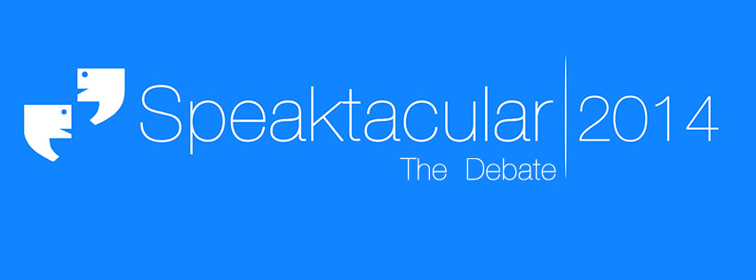

For any further queries you can contact us
Athira Nair: +919892145552
Darshan Tina: +919833013576
Drishti Gwalani: +919930548246
Geetika Suroliya: +917506274010
Karan Parsnani: +919766680929
Pawan Chawla:+919930067763
Or drop us a mail at support@speaktacular2015.in

Originally conceived for the college’s students by the Management Society of TSEC (MS-TSEC) as an introduction to the rich world of debate, Speaktacular rapidly grew from its humble beginnings in 2010 to the national competition it is today under the guidance of the Society’s counsellor, Ms. Anjali Malviya. and TSEC’s principal, Dr. G. T. Thampi.
2014 saw an exemplary discussion on controversial subjects, with teams from around the nation bending and twisting the opinions of packed halls to polarise each mind to their favour. The rigorous screening procedure followed in selecting candidates ensured a competitive and fruitful discussion without a dull moment as the audience roared with laughter at the wit on display and was hushed into silence at flawless logic and passionate arguments as a diverse range of students across various fields of study, from law to engineering, went head-to-head over a carefully chosen series of topics designed to challenge the sharpest minds and tread the grey area between right and wrong, the ultimate judge, as always, being those in attendance.

Speaktacular is one of India’s premier debates. A classic panel-style contestation, the event hosts the elite of the nation’s debaters over the course of 2 days at the Thadomal Shahani Engineering College (TSEC), an institution that ranks amongst the foremost in the city. The competition provides a platform for competitors to employ ethos, pathos and logos to argue, discuss and disagree their way to the title of Mumbai’s best debaters.